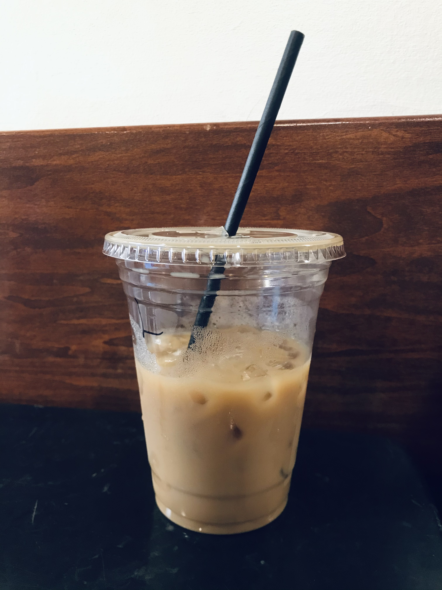

There is so much more to coffee type than just hot or iced!
To someone unfamiliar with the various coffee types, these are just words. Read on to learn the basic recipe for each drink.
Just coffee
Espresso & steamed Milk
Espresso, steamed milk, & foam
Espresso & hot water
1 ounce of espresso
2 ounces of espresso
1 ounce of espresso & 1 ounce of steamed milk
Coffee & espresso
Espresso & foamed milk
Long pulled espresso
Espresso shot & foam
Espresso, chocolate, & steamed milk
Short pulled espresso
Espresso & steamed milk
Espresso & ice cream
Coffee & steamed milk
Coffee, whisky, sugar, & cream